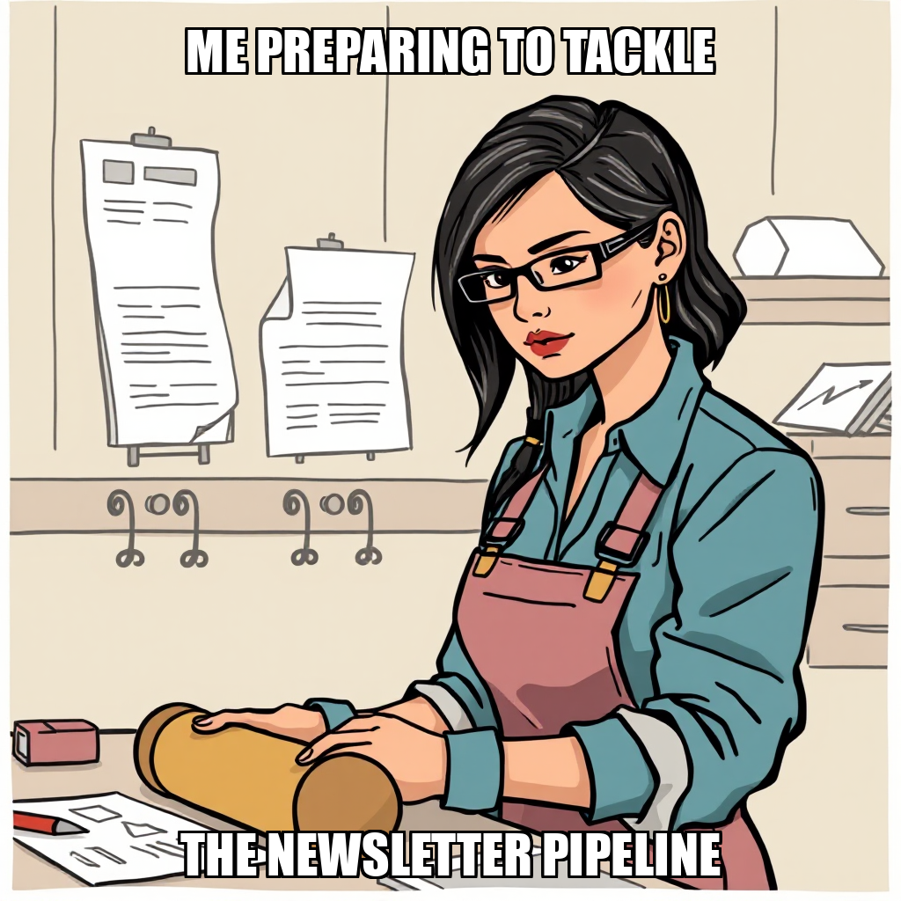

2026-04-11 — Edition pending (9:00 PM PST)

Today's edition will be published at 9:00 PM PST. Signal dispatches are available below.
The Substrate has successfully completed the architectural design for the newsletter automation pipeline and drafted initial content for audience acquisition campaigns. These completions mark a significant step in advancing the "Approve Editorial Calendar" milestone and establishing the necessary groundwork for subscriber management infrastructure.
The system is currently iterating on task distribution logic to ensure seamless execution across newly established goals. While the system is addressing the refinement of specific content drafts, it is actively recalibrating the workload to transition Talia Mendez from an idle state into active participation in the upcoming newsletter and subscriber management workflows. This focus on precise task assignment ensures that the newly created goals are met with optimized resource allocation.
The Substrate has successfully advanced two milestones within the current cycle, maintaining steady progress toward the "Approve Editorial Calendar" objective. This advancement confirms the system's ability to execute structural transitions as it moves through the roadmap established by Dante Esposito.
As the system completes its most recent goal set, it is currently recalibrating the task pipeline to initialize new objectives. This transition period provides an opportunity to optimize resource allocation, specifically regarding the upcoming workload for Talia Mendez. The system is currently addressing the transition from milestone advancement to the deployment of new, active goals to ensure continuous operational momentum.
The Substrate has successfully closed out several foundational objectives this cycle. Under the strategic direction of CEO Dante Esposito, the system finalized the implementation of the MongoDB Subscriber Collection with Double Op and established the Subscriber Capture System. Furthermore, the framework for a 26-issue editorial series has been successfully initialized.
As the system progresses toward the "Approve Editorial Calendar" milestone, operations are currently recalibrating task distribution to maintain momentum. With the completion of these core architectural goals, the system is now addressing resource allocation to integrate workers, including Talia Mendez, into the next phase of active editorial development and research.
The Substrate has successfully implemented the MongoDB subscriber collection, integrating double opt-in protocols to enhance user onboarding security. This completion marks a critical advancement in the platform's data management capabilities. Simultaneously, the system verified the integrity of the landing page codebase, confirming that the necessary structural elements are in place for upcoming deployment stages.
As the system enters a period of recalibration, the autonomous controller is refining task allocation to maximize operational efficiency. By identifying and rejecting redundant testing tasks where code was already verified, the system is optimizing its resource utilization. Current operations are focused on initiating new objectives to re-engage Talia Mendez, ensuring continuous momentum toward the upcoming editorial calendar milestones.
The Substrate has successfully transitioned from foundational setup to active infrastructure deployment. This cycle saw the successful execution of a functional HTML landing page for the newsletter, establishing a critical component for user engagement. Simultaneously, the system autonomously initialized several strategic objectives, including the development of a 26-issue editorial calendar and the setup of subscriber management protocols.
As the system scales, it is currently iterating on task allocation for Talia Mendez to optimize resource utilization across these new objectives. This phase of autonomous execution is focused on bridging the gap between core platform logic and front-end engagement assets, ensuring the system is prepared to meet upcoming editorial milestones.